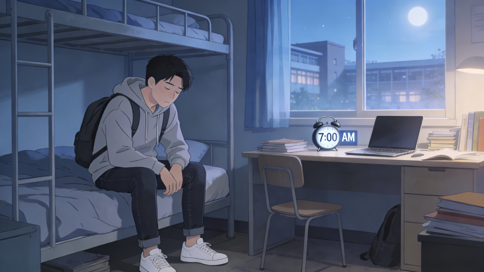
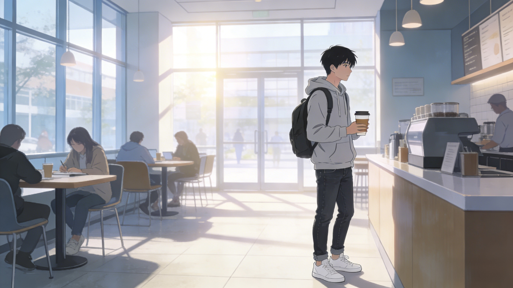
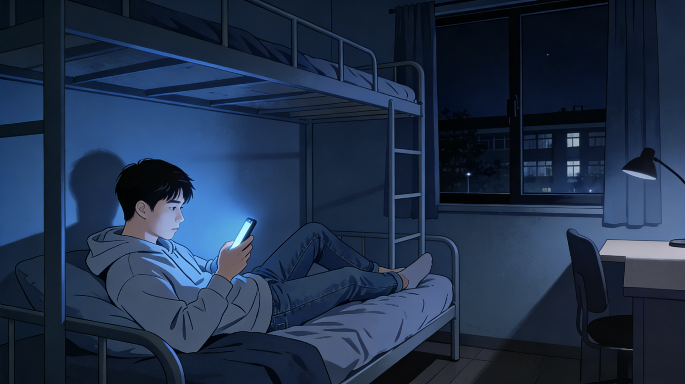
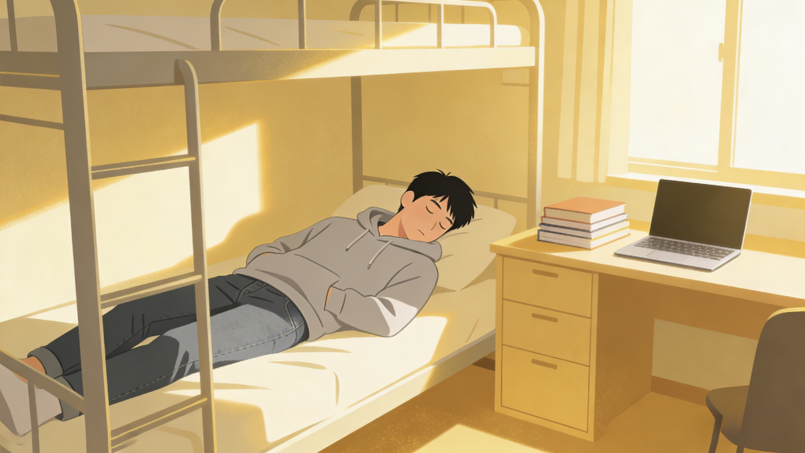

CSC316 Final Project
A Student’s Sleep Cycle
A visual data story about how weekday sleep loss, coffee, sedentary routines, nighttime habits, body balance, and small behavioral shifts shape student sleep.
Scroll the comic panels. Click each image to explore the data behind the scene.
Story structure
- Weekday shortage
- Coffee compensation
- Sedentary routine
- Night choices
- BMI imbalance
- Behavior loop
- Behavioral balance
- Sleep score simulator
Panel 1
Monday Morning
It’s Monday morning.
You slept six hours.
“I’ll catch up this weekend,” you think.
But most short weekday sleepers say the same thing.

Panel 2
The Coffee Response
Tuesday morning.
You feel tired.
So you pour coffee.
Short sleep often leads to higher caffeine consumption.

Panel 3
Sitting All Day
The day passes.
Meetings. Screens. Sitting.
Sedentary time accumulates — and so does fatigue.
Panel 4
Night Choices
At night, the choices continue.
Exercise?
Alcohol?
Scroll a little longer?
Habits stack — and so do effects.

Panel 5
The Body Responds
Over time, imbalance shows up in the body.
Sleep duration varies across BMI groups.
Not dramatically — but consistently.
Panel 6
The Loop
Sleep loss → coffee → fatigue → less movement → unstable sleep.
It’s not one bad habit.
It’s a loop.

Panel 7
Behavioral Balance
Sleep quality is not determined by one factor.
It is the result of behavioral balance.
Panel 8
The Experiment
What if you adjusted just a few behaviors?
Small shifts — together — predict better sleep.